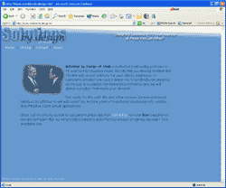

| |

Web Based Applications
This is where we would talk all about how we can provide efficient and accessible web applications.
I'm not really sure what we would say here to fill some space, but something
that looks good and makes people want to give us lots of money. It would have
to be convincing and long enough to look good and really tout our Internet skills. We should encourage
clients to
use a web based application and discuss the adantages here. Some clients will know that they need a web
based application, others may not see the benefits of web based for Intranet use instead of Internet use,
but it can be helpful especially when talking about deploying and mainting the application for more than
just one or two users. Pricing depends upon the scale and complexity of the project it will be an hourly
rate and we could say something like: Pricing for web based applications usually ranges from $40-$50/hour.
|